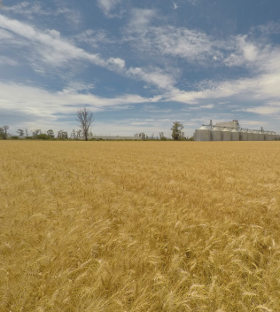
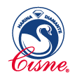
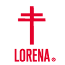
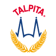
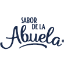
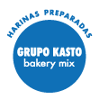

"Agradezco el buen servicio y disponibilidad de Grupo Kasto, la atención es excelente. Siempre están al pendiente de mi inventario, evitando que se me termine el producto."
División Molinos de trigo
Conoce el respaldo de nuestra división y nuestra incursión en la molienda de trigo
Grupo Kasto Molinos es una división de Grupo Kasto, un sólido y reconocido grupo de empresas agroindustriales con un gran compromiso social, el cual nace en el año de 1945 en la Piedad, Michoacán, en el segmento de comercialización de semillas.
Contando con una amplia experiencia en el sector de comercialización de granos, en 1975 se incursiona en el mercado de la molienda de trigo, a través de participación accionaria en Harinera de Atotonilco, creando así la división "Molinos de trigo".
Actualmente en Grupo Kasto Molinos contamos con 3 molinos propios y 2 con participación accionaria, y más de 10 marcas propias, con variedades que van desde harinas de alta proteína, hasta harinas preparadas.
Somos uno de los líderes en la producción de harinas de trigo en el bajío-occidente del país, cubriendo y garantizando el abasto en más de 10 estados de la república, y atendiendo a los sectores panadero, abarrotero, galletero, tortillero, mayorista, industrial, entre otros.







Nuestros Molinos
Los molinos están estratégicamente ubicados en zonas que permiten garantizar el oportuno abastecimiento de trigos nacionales e importados, así como la distribución de harinas de trigo y subproductos, a más de 10 estados en el centro, occidente y norte del país.
Planta Central
Grupo Kasto Molinos
Planta Guadalajara
Grupo Kasto Molinos
Planta Jiquilpan
Grupo Kasto Molinos
Molino La Concepción
Grupo Kasto Molinos
Compañia Harinera del Parayas
Participación Accionaria
Harinera de Atotonilco
Participación Accionaria
Historia
1975
Grupo Kasto inicia operaciones en la molienda de trigo por medio de una co-inversión en Harinera de Atotonilco.
1984
Se adquiere Molino Guadalajara, antes Harinera de Occidente.
1985
Se adquiere Molino Central, con una capacidad de producción de molienda instalada de 42,000 toneladas de trigo anuales
1987
Se adquiere el primer molino propio llamado Molino Central, ubicado en Zapopan, Jalisco.
1989
Se adquiere Molino de trigo San Rafael, en Michoacán, un molino con casi 80 años de antigüedad.
1990
Se adquiere Molino de trigo La Blanca, en Michoacán.
1995
Molino Guadalajara, antes harinera de Occidente, pasa a ser parte de Grupo Kasto. Ubicado en Guadalajara, Jalisco.
1997
Se adquiere Molino de trigo Jiquilpan, ubicado en Michoacán.
2012
Se obtienen las certificaciones de ISO 9001 y HACCP (Análisis de Peligros y Puntos Críticos de Control).
2018
Homologación y renovación de imagen de todos los productos.
2019
Nace Grupo Kasto Molinos como razón social a raíz de la fusión de Molino Guadalajara, Molino Central y Molino de trigo Jiquilpan
2020
Inicia la construcción de un nuevo molino en La Barca, Jalisco, llamado Molino La Concepción.
Skills Company
4
Molinos con la mejor tecnología
5
CEDIS en la república
2
Clientes satisfechos
17
Estados con presencia